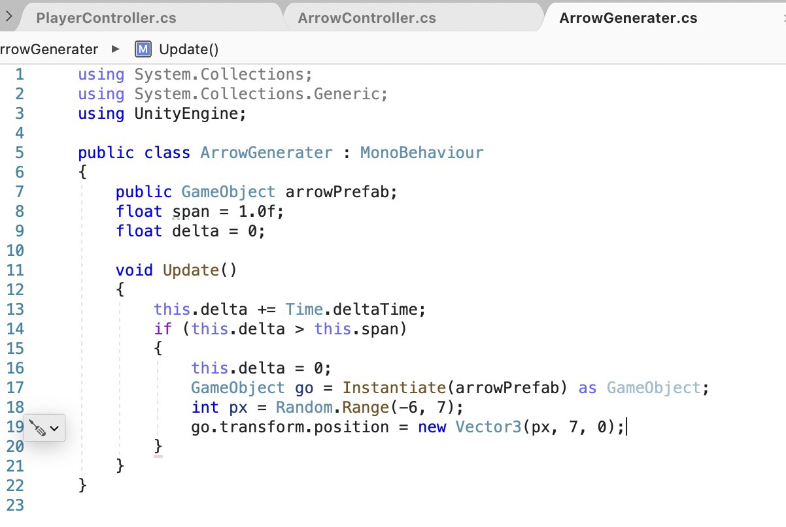

作成手順
プロジェクト作成→基本作成手順まとめ
プレイヤ(ネコ)の移動処理
矢を落下させる処理
当たり判定(ネコに矢が当たった時の処理)
矢を沢山つくる工場の作成
UIを表示
GameDirectorの作成
左右のボタンを作成
矢の処理
矢を落下させるスクリプトを作成し、矢がネコに当たった判定を追加する
矢を沢山つくる工場(ジェネレータ)の作成
工場には設計図と呼ばれるPrefubが必要になります。
Prefubとは、同じようなものをゲーム内で沢山作って使いたいときに必要なものです。
まずは、Prefubを作ります。
矢を生成する/ArrowGenerater
UI(HPゲージ)を表示
HPゲージを表示させる
矢がネコに当たった時にHPゲージが減る表示がでるようにする
矢がネコに当たった時HPが減る/ArrowController